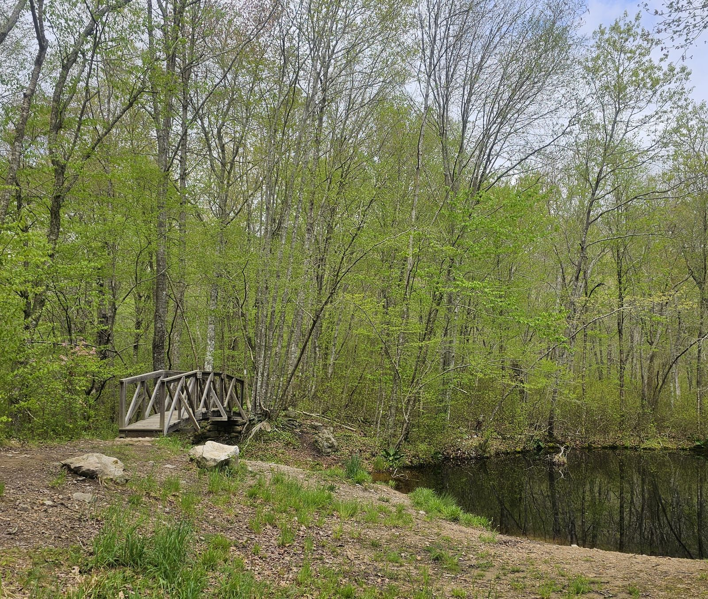
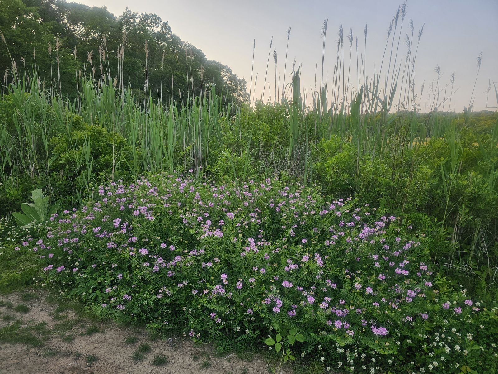

Who am I?

I am a personal trainer certified through the American Council on Exercise, a Master Trainer for Nordic Walking, and a Senior Fitness Specialist, specializing in working with older adults. My clients range in age from 70 to 93 years old. Many of them had been recovering from surgery or illness or managing chronic diseases. Through strength training and stretching, they have improved their quality of life and now enjoy greater health and independence.
After undergoing hip and knee replacement surgeries within a 10 month period, I found myself struggling with the same issues my clients face: loss of strength, balance, and endurance. While searching for resources, I came across the Urban Poling, Inc. website. Having already tried other walking poles, I was impressed by their unique Activator poles. I became certified as a UPI instructor and am passionate about Nordic Walking. I keep poles and hiking shoes in my car, ready to hike at any time!
healthyFUTURES
Supporting vitality, engagement, community
HealthyFutures established in 2008 is a local business committed to encouraging the well-being of older adults in the Westerly – Stonington – Charlestown – Hopkinton area. Healthy Futures promotes older adults’ independence through fitness training, balance and gait improvement, and Nordic Walking classes. Services are provided through one-on-one sessions, small group classes and complimentary walks on Westerly Land Trust, Hopkinton Land Trust and Avalonia trails.
Classes and training are offered at the Arcadia Y, La Grua Center and the Forget Me Not. For more information, text Julie Gooding at 401.742.4553 or email julie7747@gmail.com.
What is Urban Poling, Inc.?
Urban Poling is a proud, award-winning, 100% women-owned and operated Canadian company. Incorporated in 2005, it was one of the first companies to bring Urban Poling (Nordic walking) to Canada! Today, as an international education centre and distributor, their high-performance Urban and Activator poles are found in over 1,000 stores and have been adopted as therapy and fitness tools by more than 5,000 graduates of their training programs, including healthcare professionals and fitness instructors.
To learn more, visit www.urbanpoling.com
